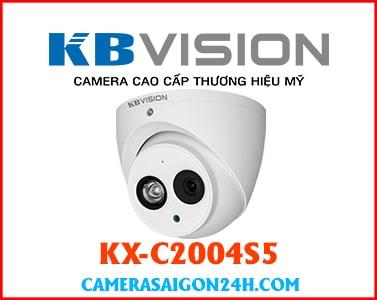
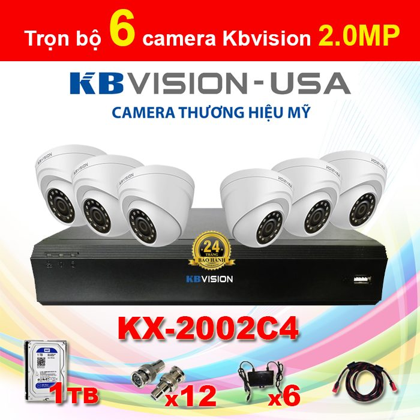
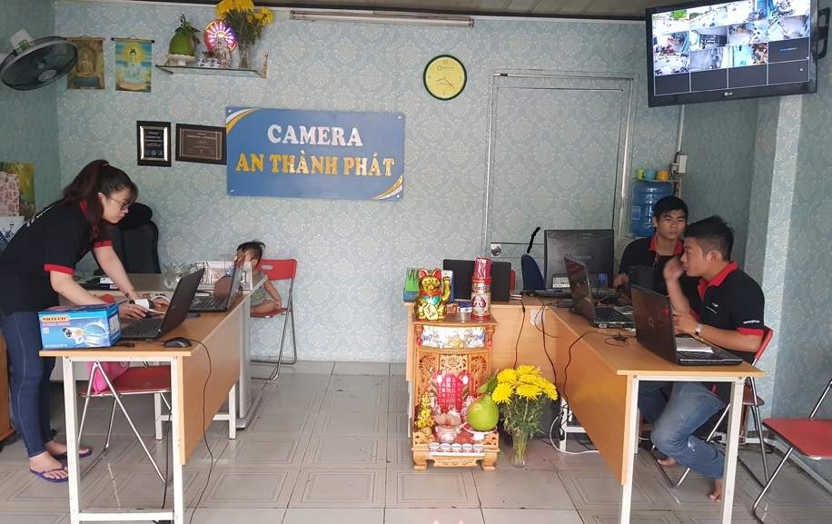
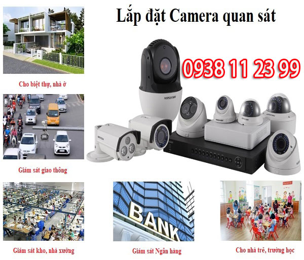

📷 LẮP CAMERA QUAN SÁT GIÁ RẺ QUẬN 1 TRỌN BỘ 📓
✏ Lắp đặt camera quan sát giá rẻ quận 1 trọn bộ có ghi âm thương hiệu KBVISION chất lượng hình ảnh Full HD 1080P phù hợp lắp cho gia đình, văn phòng, công ty hay cửa hàng📑.
LẮP ĐẶT CAMERA QUAN SÁT GIÁ RẺ QUẬN 1 TRỌN BỘ
|
Lắp Camera Quận 1 Giá Rẻ |
GIÁ LẮP CAMERA QUÂN 1 |
|
🗃Lắp 1 Camera Quan Sát Cửa Hàng Quận 1 |
3,000,000 VNĐ |
|
📇 Giá Lắp 2 camera Quận 1 Giá Rẻ |
4,100,000 VNĐ |
|
🗓 Lắp 3 camera Chống Trộm Quận 1 |
5,150,000 VNĐ |
|
🏮 Lắp Bộ 4 camera Gia Đình Quận 1 |
6,000,000 VNĐ |
• Đầu ghi hình KX-A7104SD6 4 kênh + 1 kênh IP.(Sử dụng tối đa 5 camera) Chuẩn nén H264
• Ổ cứng 500GB.
• Khuyến mãi Mỗi camera 10m dây Tín Hiệu.
• Thanh Toán Ngay Khi Bàn Giao lên Hình.
|
LẮP CAMERA QUẬN 2 GIÁ RẺ |
GIÁ LẮP CAMERA |
|
📳 Lắp 5 camera An Ninh Giá Rẻ Quận 1 |
7,700,000 VNĐ |
|
✒ Lắp 6 camera chung cư giá rẻ Quận 1 |
8,800,000 VNĐ |
|
🖼 Giá Lắp 7 camera Kho Xưởng Quận 1 |
9,850,000 VNĐ |
|
🛢 Giá Lắp đặt bộ 8 camera văn phòng quận 1 |
10,600,000 VNĐ |
• Đầu ghi hình KX-A7108SD6 8 kênh + 2 kênh IP.(Sử dụng tối đa 10 camera) Chuẩn nén H264
• Ổ cứng 500GB.
• Khuyến mãi Mỗi camera 10m dây Tín Hiệu.
• Thanh Toán Ngay Khi Bàn Giao lên Hình
|
Lắp 9 camera ghi âm Kbvision |
14,000,000 VNĐ |
|
Lắp 10 camera ghi âm Kbvision |
15,100,000 VNĐ |
|
Lắp 11 camera ghi âm Kbvision |
16,200,000 VNĐ |
|
Lắp 12 camera ghi âm Kbvision |
17,300,000 VNĐ |
|
Lắp 13 camera ghi âm Kbvision |
18,350,000 VNĐ |
|
Lắp 14 camera ghi âm Kbvision |
19,400,000 VNĐ |
|
Lắp 15 camera ghi âm Kbvision |
20,350,000 VNĐ |
|
Lắp 16 camera ghi âm Kbvision |
21,200,000 VNĐ |
• Đầu ghi hình KX-CAi7116H1 (Sử dụng tối đa 18 camera) Chuẩn nén H265+
• Ổ cứng 1000GB.
• Khuyến mãi Mỗi camera 10m dây Tín Hiệu.
• Tạm Ứng 30% trước khi lắp đặt.

Thương Hiệu KBVISION USA Xuất xứ China
- Camera KBVISION KX-C2004S5 4 in 1
- Tầm xa hồng ngoại: 40m
- Tích hợp micro ghi âm
- Độ phân giải 2.0 Mp(1920x1080) 1080P
- Ống kính: 3.6mm ( góc nhìn 93°)
- Camera bán cầu Kim loại chắc chắn
- Bảo hành 24 tháng
- Phù hợp lắp trong nhà văn phòng
- Bao công lắp đặt tận nhà (Đi dây bình thường)
🕳Lắp camera quan sát quận 1 giá rẻ có ghi âm luôn luôn là sự lựa chọn hợp lý cho các quản lý chủ cửa hàng hay công ty để có thể giám sát nhân viên làm việc 1 cách dễ dàng và hiệu quả nhất.🖊
Giá Khuyến Mại: 8,800,000 VNĐ
Giá Bán: 7,800,000 VNĐ
Lắp camera giám sát ngoài trời chất lượng hình ảnh sắt nét giám sát từ xa , sản phẩm thiết kế chuẩn IP 67 chống mưa nắng bụi bẩn, đây là dòng camera giám sát mới hình ảnh sắt nét,
Giá Khuyến Mại: 5,300,000 VNĐ
Giá Bán: 6,890,000 VNĐ
Lắp camera báo động chống trộm hikvision giá rẻ hình ảnh HD báo động thông minh hạn chế tối đa báo động giả công nghệ HD CVI chọn camera hikvision là lựa chọn ổn định lâu dài
Giá Khuyến Mại: 7,900,000 VNĐ
Giá Bán: 10,500,000 VNĐ
Lắp camera KBVISION chất lượng cao hình ảnh Utra HD sắt nét ổn định Thương hiệu hàng đầu công nghệ HDCVI chip sony sản phẩm tốt độ bền cao
Giá Khuyến Mại: 7,500,000 VNĐ
Giá Bán: 8,700,000 VNĐ
Lắp camera báo động chống trộm Dahua giá rẻ công nghệ HD có đèn led hổ trợ cảnh báo khi phát hiện chuyển động phù hợp với kho hàng văn phòng và gia đình
Giá Khuyến Mại: 5,500,000 VNĐ
Giá Bán: 7,600,000 VNĐ
Lắp camera giám sát căn hộ giá rẻ hình ảnh sắt nét phù hợp với hệ thống mạng chung cư căn hộ và các tòa nhà, giám sát ổn định là một trong những đặt tính ưu việt của gói sản phẩm này.
Giá Khuyến Mại: 5,900,000 VNĐ
Giá Bán: 8,900,000 VNĐ
Lắp camera giám sát khu phố giá rẻ tiết kiệm chi phí , gói phù hợp lắp cho con hẻm khu phố vừa và nhỏ , thích hợp cho việc giám sát nhiều người cùng lúc, đây là một trong những giải pháp tiết kiệm đảm bảo an ninh.
Giá Khuyến Mại: 6,200,000 VNĐ
Giá Bán: 8,560,000 VNĐ
Khả năng báo động nhạy qua điện thoại là đặt tính ưu việt nhất của gói sản phẩm, trọn bộ 4 camera thương hiệu HIKVISION top 1 thế giới đây là lựa chọn hoàn hảo bảo vệ an ninh gia đình.
Giá Khuyến Mại: 6,700,000 VNĐ
Giá Bán: 9,800,000 VNĐ
Độ nét cao giá rẻ là giải pháp phù hợp cho cửa hàng, quán coffee cửa hàng tiện lợi đây là gói được lựa chọn nhiều nhất bởi chất lượng hình ảnh Utra 2k giám sát từ xa qua điện thoại giá rẻ chất lượng ổn định.
Giá Khuyến Mại: 5,800,000 VNĐ
Giá Bán: 8,790,000 VNĐ
Thiết kế chuẩn IP 67 chống bụi bản mưa nắng giá rẻ phù hợp cho những kho hàng nhà xưởng vừa và nhỏ, hồng ngoại ban đêm 20m phù hợp giám sát trong điều kiện thiếu ánh sáng. Lắp camera kho hàng nhà xưởng giá rẻ tiết kiệm nhất hiện nay.
Giá Khuyến Mại: 5,800,000 VNĐ
Giá Bán: 8,900,000 VNĐ
Với chất lượng hình ảnh sắt nét Utra 2k phù hợp cho văn phòng gia đình và cửa hàng. giám sát tốc độ nhanh qua điện thoại đây là giải pháp tiết kiệm. Cmaera giá rẻ chất lượng cao thương hiệu hàng đầu.
Giá Khuyến Mại: 6,800,000 VNĐ
Giá Bán: 7.800.000
Công nghệ HDCVI chất lượng hình ảnh siêu nét đây là những lựa chọn ưu việt nhất, giám sát ổn định tốc độ cao bằng tên miền và công nghệ cloud server tại Việt Nam là một trong những đặt tính ưu việt nhất.
Giá Khuyến Mại: 7,500,000 VNĐ
Giá Bán: 9,700,000 VNĐ
Chất lượng hình ảnh sắt nét thương hiệu camera hàng đầu. với dịch vụ lắp camera quan sát chuyên nghiệp tại An Thành Phát Đây là gói camera giám sát hình ảnh sắt nét chất lượng cao.
LẮP ĐẶT CAMERA GIÁ RẺ TẠI QUẬN 1:
Quận 1 hay còn gọi là Quận Nhất là trung tâm của Thành Phố Hồ Chí Minh. Nơi tập trung của các cơ quan chính quyền, lãnh sự quán các nước, nhà cao tầng. Trong đó tòa nhà Bitexco là tòa nhà cao nhất thành phố. Phố đi bộ Nguyễn Huệ và đường Đồng Khởi là 2 con đường thương mại chính của quận 1. Quận Nhất với nhiều khách sạn cao cấp như khách sạn Edenstar Saigon Hotel, Liberty Central Saigon Point, Liberty Central Saigon Reverside Hotel... Nhiều khu vui chơi giải trí như phố đi bộ Bùi Viện, khu phố Tây Phạm Ngủ Lão, cafe bệt Nhà Thờ Đức Bà, cầu Mống, chợ Bến Thành, Dinh Độc Lập....

Thương hiệu camera quan sát HIKVISION tại Quận 4 là một trong những thương hiệu camera tốt nhất trên thị trường hiện nay, Sản phẩm camera HIKVISION được sử dụng trong nhiều dự án lớn tại Việt Nam. Giá thành rẻ, chất lượng tốt phù hợp với thị hiếu người Việt. An Thành Phát cung cấp nhiều giải pháp lắp camera quan sát cho khách hàng tại Quận 4. Sử dụng công nghệ camera HDTVI cho hình ảnh lên đến độ phân giải 4K chuẩn nén hình ảnh h265+ tiêt kiệm dung lương lữu trữ hình ảnh camera giám sát. phù hợp cho những dự án lắp camera nhà xưởng tại Quận 4 cần lưu trữ lâu.
Lắp camera HIKVISION tại Quận 4 công ty An Thành Phát với giá rẻ sản phẩm camera ổn định giám sát qua điện thoại áp dụng công nghệ tiên tiến, HIKconect và tên miên camera. Camera quan sát HIKISION tại Quận 4 giá rẻ phù hợp cho kho hàng, cửa hàng gia đình và nhà xưởng, giá rẻ tiết kiệm chất lượng hình ảnh sắt nét giám sát ổn định qua điện thoại từ xa.

Thương hiệu camera Dahua là một trong những thương hiệu camera tiên phong trong lĩnh vực camera quan sát an ninh. Lắp camera Dahua Quận 4 giá rẻ công ty An Thành phát , sử dụng công nghệ camera HDCVI cho hình ảnh sáng đep trung thực. truyền tải hình ảnh qua cáp đồng trục ổ định. Lắp camera Dahu Quận 4 giá rẻ ổn định giám sát cửa hàng kho hàng nhà xưởng, Thương hiệu camera Dahua Quận 4 sử dụng công nghệ cloud có server đặt tại việt Nam giúp giám sát qua điện thoại nhanh ổn định.
Dịch vụ lắp camera Quận 4 thương hiệu camera Dahua số 1 thế giới về giải pháp An Ninh, tích hợp nhiều công nghệ camera quan sát thương hiệu dahua. Với công nghệ night breaker công nghệ camera HDCVI, công nghệ camera IP đây l2 những công nghệ camera quan sát hàng đầu mà thương hiệu camera quan sát Dahua đang sở hữu bằng sáng chế. Việc lắp camera quan sát Quận 4 thương hiệu Dahua là một trong những lựa chọn đáng tin cây cho gia đình cửa hàng.
BÁO GIÁ LẮP CAMERA QUAN SÁT Quận 1 THƯƠNG HIỆU KBVISION
Thương hiệu Camera KBvision là thương hiệu camera chất lượng có hồng ngoại tốt và độ nét độ trung thực cao . với công nghệ camera HD CVI sáng đẹp, sử dụng công nghệ điện toán đám mây tích hợp server tại Việt Nam cho tốc độ truy cập xem trên điện thoại nhanh. đây là những ưu điểm khi lắp camera KBvision Quận 1 Công ty An Thành Phát.
Báo giá lắp camera quan sát Quận 1 của công ty camera An Thành phát sử dụng camera thương hiệu KBvision độ phân giải 2.0MP chất lượng hình ảnhh FULL HD 1080P đã bao gồm cài đặt xem qua mạng điện thoại.
Báo giá sau đây là gói cơ bản thường sử dụng lắp camera Quận 1 cho văn phòng, Cửa hàng và gia đình. Khách hàng có thể nâng cấp hệ thống phù hợp với nhu cầu của mình như. Thời gian lưu trữu, số lượng camera và chương trình khuyến mãi tị quận tận bình tùy theo từng thời điểm qua Điện thoại 0938 11 23 99 để được tư vấn hổ trợ và khuyến mãi tốt nhất.

Trọn bộ camera quan sát Quận 1 bao gồm
- Đầu ghi hình camera quan sát 4 kênh, 8 kênh, 16 kênh phụ thuộc vào số lượng camera.
- Ổ cứng lưu trữ 250GB, dùng cho số lượng 4 camera và, 500 GB dành cho 5 đến 8 camera. và 1 TB dùng cho từ 9 đến 16 camera
- Số lượng camera cần thiết phụ thuộc vào số lượng của khách hàng.
- Tặng nguồn chuyển điện loại 1 có ổ định điện áp tương ứng số lượng camera
- Khuyến mãi phụ kiện, Jack đấu nối, đinh móc băn keo đủ để sử dụng
- Miễn phí nhân công lắp đặt camera tại Quận 1 1 ngày
- Báo giá chưa bao gồm VAT khi khách hàng yêu cầu.
Giá lắp 1 camera Quận 1 KBvision: 3.200.000
Giá lắp 2 camera Quận 1 KBvision: 3.700.000
Giá lắp 3 camera Quận 1 KBvision: 4.400.000
Giá lắp 4 camera Quận 1 KBvision: 4.800.000
Giá lắp 5 camera Quận 1 KBvision: 6.600.000
Giá lắp 6 camera Quận 1 KBvision: 7.200.000
Giá lắp 7 camera Quận 1 KBvision: 7.800.000
Giá lắp 8 camera Quận 1 KBvision: 8.400.000
Giá lắp 9 camera Quận 1 KBvision: 11.500.000
Giá lắp 10 camera Quận 1 KBvision: 12.100.000
Giá lắp 11 camera Quận 1 KBvision: 13.700.000
Giá lắp 12 camera Quận 1 KBvision: 14.300.000
Giá lắp 13 camera Quận 1 KBvision: 14.900.000
Giá lắp 14 camera Quận 1 KBvision: 15.500.000
Giá lắp 15 camera Quận 1 KBvision: 16.100.000
Giá lắp 16 camera Quận 1 KBvision: 16.700.000
CHÍNH SÁCH BẢO HÀNH CAMERA KBvision USA TẠI Quận 1 CÔNG TY CAMERA AN THÀNH PHÁT
- Camera KBvision là thương hiệu số 1 thế giới về hệ thống camera quan sát chất lượng sản phẩm khá ổn dịnh giá cạnh tranh phù hơp lắp đặt camera tại Quận 1 cho dự án nhà xưởng. kho hàng , gia đình.
- Lắp camera KBvision USA khách có những chính sách đặt biệt, được đổi mới hoàn toàn sản phẩm trong thời gian 30 ngày sau khi lắp camera KBvision tại Quận 1 khi sản phẩm còn đầy đủ phụ kiện hộp và tem.
- Sản phẩm bảo hành camera KBvision từ 3-5 ngày áp dụng cho khách hàng lắp camera tại Quận 1. không tính ngày nghĩ.
- Dịch vụ lắp camera tại Quận 1 công ty camera An Thành Phát hổ trợ bảo hành tận nơi khi có lỗi về camera, Đầu ghi hình, Ổ cứng lưu trữ sử dụng cho gói camera. Những sản phẩm sẽ hổ trợ sửa chửa bảo hành có tính phí.
TƯ VẤN LẮP ĐẶT CAMERA QUAN SÁT. Tham khảo thông tin lắp đặt camera quan sát bạn sẽ có những sản phẩm đúng chất lượng đúng tiêu chí sử dụng hệ thống camera quan sát,
An Thành Phát luôn tư vấn giải pháp lắp đặt camera quan sát giá rẻ nhất tiết kiệm chi phí cho khách hàng, sử dụng camera quan sát đúng nhu cầu mang lại tính ổn định dễ dàng sử dụng
Hệ thống camera nhà xưởng giữ vai trò quan trọng trong giám sát và quản lý hoạt động sản xuất. Trong quá trình sử dụng việc gặp hư hỏng hay sự cố là điều khó tránh
Dịch vụ bảo trì camera nhà xưởng giúp đảm bảo hệ thống giám sát hoạt động ổn định, phát hiện sớm sự cố, kéo dài tuổi thọ của hệ thống và giảm thiểu rủi ro an ninh. Kiểm tra, vệ sinh và khắc phục lỗi định kỳ sẽ giúp doanh nghiệp tiết kiệm chi phí sửa chữa và tránh gián đoạn trong quá trình sản xuất
Camera đóng hàng là mẫu camera nhìn rõ được mã vận đơn (barcode/QR code) trên từng kiện hàng, từ đó giúp cung cấp những bằng chứng xác thực khi xảy ra tranh chấp về vấn đề thiếu hàng, hàng lỗi, hàng không giống mẫu.
Giải pháp camera xem mã vận đơn là hệ thống giám sát thông minh giúp các doanh nghiệp, cửa hàng, shop kinh doanh online ghi lại toàn bộ quá trình thao tác đóng gói và hình ảnh rõ nét của mã vạch, mã QR trên các đơn hàng. Giúp dễ dàng giải quyết những tranh chấp theo hướng có lợi người bán hàng khi xảy ra hiện tượng thiếu, sai hàng, mất hàng
Giải Pháp LiveStream Cuồn Vợt là dịch vụ cho phép người chơi vợt trực tuyến giữa các trận đấu. Người chơi có thể theo dõi trận đấu trực tiếp và thậm chí tham gia trò chuyện với các đối thủ
Với giải pháp LiveStream Camera Giám Sát Cầu Lông đây là một giải pháp cực kì ưu việt giúp tăng số lượng người đến chơi tại sân cầu lông, cũng như việc triễn khai giải đấu cũng trở nên dễ dàng hơn, giúp tiết kiệm chi phí chất lượng cao nhất có thể
Giải Pháp Livestream Sân Pickleball Có Bảng Điểm thì đây là một trong những giải pháp tối ưu và tiết kiệm chi phí nhất trong việc livestream nhất hiện nay, nhờ vào việc tận dụng camera an ninh để sử dụng camera có gốc nhìn rốc bao quát tốt, độ ổn định cao là ưu điểm của giải pháp này
Tư vấn lắp camera gia đình là dịch vụ chuyên nghiệp giúp bạn bảo vệ ngôi nhà và gia đình mình an toàn hơn. Chúng tôi cung cấp giải pháp camera hiện đại, tích hợp công nghệ tiên tiến để quản lý và giám sát từ xa thông qua điện thoại di động
Giới Thiệu Dòng Camera Hero Dahua
Camera an ninh Hero Dahua mang đến hiệu suất xuất sắc với công nghệ tiên tiến, hình ảnh sắc nét và độ phân giải cao. Với khả năng quan sát ban đêm và chống ngược sáng tốt, camera Hero Dahua đảm bảo an ninh cho gia đình và doanh nghiệp của bạn
Các Camera Wifi Tốt Nhất Hiện Nay
Các hãng camera wifi hàng đầu hiện nay không thể không kể đến các hãng nổi tiếng việt nam như dahua, imou, hikvision, kbvision, ezviz,. .
Những Mẫu Camera Ưu Chuộng Nhất Hiện Nay
Trong thời đại công nghệ ngày nay, camera quan sát đã trở thành một phần không thể thiếu trong hệ thống an ninh của nhiều gia đình, doanh nghiệp và cơ sở công cộng. Với sự phát triển nhanh chóng của công nghệ, thị trường camera quan sát ngày càng trở nên đa dạng hơn với nhiều thương hiệu khác nhau, mỗi hãng đều có những đặc điểm và ưu điểm riêng biệt
Lắp Camera Giám Sát Đóng Hàng
Giám sát và đảm bảo chất lượng hàng hóa trong quy trình sản xuất và vận hành là vô cùng cần thiết. Một trong những giải pháp được ứng dụng rộng rãi nhất chính là lắp đặt camera giám sát đóng hàng
Trong bối cảnh xã hội ngày càng phức tạp và nguy cơ an ninh tăng cao, việc triển khai các giải pháp giám sát an ninh trở nên vô cùng cần thiết. Camera giám sát an ninh tại phường...
Camera An Ninh Ngoài Trời 360 Độ là một thiết bị đáng tin cậy để bảo vệ ngôi nhà hay doanh nghiệp của bạn. Với khả năng quay và ghi hình 360 độ, nó bao phủ toàn bộ khu vực xung quanh, không để sót bất kỳ góc nào
Chúng tôi xin giới thiệu đến bạn báo giá camera trọn bộ giá rẻ tại TP HCM. Với chất lượng đảm bảo và giá cả phù hợp, chúng tôi cam kết mang đến cho bạn sự an toàn tuyệt đối
Dự án lắp bộ camera quan sát công ty tại quận 10 chính hãng với các thiết bị như camera quan sát trong nhà và ngoài trời Hikvision, camera giả báo khói Vantech, 1 đầu ghi...
Ngày nay việc lắp camera cho gia đình là điều vô cùng quan trọng và cần thiết. Bởi chúng có thể giúp ta bảo vệ an ninh hiệu quả hơn bao giờ hết, mọi tài sản hay người thân yêu của bạn luôn luôn được bảo vệ
Dự án lắp đặt hệ thống 12 camera quan sát cho tòa nhà văn phòng Hãng Hikvision quan sát mọi ngõ ngách từ nơi gửi xe đến hệ thống thang máy từng lầu đảm bảo an ninh cho tất cả mọi người trong công ty
Lắp đặt camera giá rẻ tại quận 1. Uy tín chất lượng
Với điều kiện thuận lợi để buôn bán, kinh doanh và giải trí như vậy. Quận Nhất luôn là nơi tập trung khá đông đúc của người dân và khách du lich trong và ngoài nước. Dẫn đến tình hình an ninh xã hội ở các tụ điêm trở nên phức tạp. Gây mất trật tự an ninh khu vực quận 1 nói chung và cả thành phố nói riêng.
Không ít các vụ án đáng tiếc đã xảy ra trên địa bạn quận. Trong đó có cả người nước ngoài tham gia. Cho nên để đảm bảo sự an toàn cho người dân cũng như khách du lịch. Hầu hết các tuyến đường, cửa hàng, khách sạn, trung tâm mua sắp.... Đều có lắp đặt camera quan sát để theo dõi. Hạn chế tình trạng cướp giật và trộm cắp vặt.
Công ty TNHH Thương Mại Và Dịch Vụ Lắp Camera Quận 1 An Thành Phát với chi nhánh:
Dịa chỉ: 1/6 Đường Nguyễn Thị Minh Khai, Quận 1, TP Hồ Chí Minh ( Chân cầu Thị Nghè)
LIÊN HỆ LẮP CAMERA TẠI Quận 1 CÔNG TY CAMERA AN THÀNH PHÁT
Hotline 0938 11 23 99 Tham khảo giá lắp đặt camera tại Quận 1
Lắp Camera Giá rẻ
CÔNG TY LẮP CAMERA WIFI QUẬN 1 GIÁ RẺ
LẮP CAMERA WIFI GIÁ RẺ QUẬN 1 QUESTEK
công ty Lắp camera wifi questek quận 6
Lắp camera wifi tại Quận 1 giá rẻ chọn dòng sản phẩm camera wifi questek chất lượng. Một số ưu điểm dòng camera wifi nên lắp đặt tại Quận 1 thương hiệu questek như: Âm thanh 2 chiều, xoay 360 độ, kết nối wifi ổn định, hổ trợ kết nối có dây và không dây, camera wifi tích hợp báo động lắp giá rẻ tại Quận 1.
Giá lắp đặt camera wifi Quận 1 rẻ 1.500.000 VNĐ Tặng thẻ nhớ 32GB
Đây là dòng camera wifi chât lượng nên lắp camera wifi này khu vực Quận 1 vì tiết kiệm chi phí thương hiệu questek gần Quận 1.
Cấu hình camera wifi questek
Camera IP Wifi Questek QOB-922IP hồng ngoại 1.3 Megapixel, Xoay 360 độ

- Hỗ trợ thẻ nhớ 64GB
- Cảm biến hình ảnh: HD 960P ( 1.3MP)
- Độ phân giải: 1.3 MP , Xoay 360 độ
- Độ nhạy sáng: 0.01 Lux
- Giám sát: IE, Firefox, Chrome, CMS....
- Hồng ngoại: 11 Leds@5mm
- Tầm xa hồng ngoại: 10 ~ 15 m
- Hỗ trợ Cloud, kết nối không dây Wifi , dễ dàng kết nối , dễ dàng thao tác điều khiển , Âm thanh: Micro.
- Kết nối tiện lợi, Chỉ cần cắm nguồn và sử dụng phần mềm điện thoại để search Wifi sẽ cấp IP cho Camera.
- Kết nối: RJ45, Wireless
- Nguồn: 5V DC
- Kích thước: 10,3*11*11,2cm
Công ty lắp camera wifi Quận 1 An Thành Phát chuyên lắp camera wifi chính hãng Questek Kết nối ổn định với 2 phương thức . Kết nối không dây và kết nối có dây. Lắp camera wifi giá rẻ Questek là dòng sản phẩm phù hợp lắp camera wifi cho văn phòng , lắp camera wifi cửa hàng tại Quận 1 tiết kiệm chi phí sử dụng hàng camera chính hãng tích hợp báo động chống trộm. với chi phí lắp camera wifi 1.500.000 VNĐ thì đây là lựa chọn tốt khi lắp 1 camera wifi sử dụng lâu dài.

Lắp camera quan sát KBIVISON tại QUẬN 1 có tốt hay không ? có thể nói thương hiệu camera quan sát kbvision USA là một trong những thương hiệu đáng tin cây trong năm nay, hầu như những sản phẩm camera quan sát lắp đặt tại QUẬN 1 sử dụng camera KBVISION USA khách hàng rất hài lòng về chất lượng sản phẩm cũng như chính sách phục vụ của thương hiệu camera KBVISION.
Công ty camera An Thành Phát nhà phân phối chính thức thương hiệu camera KBVISION USA tại QUẬN 1. công ty luôn có những chính sách phù hợp, chiết khấu cao và dịch vụ tốt nhất cho khách hàng khi lắp camera quan sát QUẬN 1 cho cửa hàng, văn phòng, gia đình, nhà xưởng, xưởng sản xuất và những công trình quy mô lớn tại QUẬN 1. An Thành Phát luôn đưa ra những giải pháp lắp camera giá rẻ phù hợp tiết kiệm chi phí nhất cho khách hàng. Đảm bảo hệ thống camera quan sát tại QUẬN 1 luôn hoặt động ổn định chất lượng tốt.

Camera quan sát Vantech là một trong những thương hiệu camera hàng đầu tại Việt Nam, Vantech là thương hiệu Việt Chất lượng tốt Giá cả cạnh tranh. Lắp camera Vantech QUẬN 1 là lựa chon thương hiệu việt giá rẻ. Công ty camera An Thành Phát luôn mang đến khách hàng tại QUẬN 1 những giải pháp giám sát hiệu quả giá rẻ ổn định, Thương hiệu camera Vantech sở hữu nhiều công nghệ camera quan sát như, công nghệ AHD, Camera HDCVI, Camera HDTVI, Camera IP, và những công nghệ zoom soay, với giá thành hợp lý, phù hợp triển khai những dự án lớn tại QUẬN 1 như nhà xưởng, kho hàng , công trình giao thông nhà phố công cộng.
Lắp camera quan sát Vantech QUẬN 1 là lựa chọn thương hiệu camera Việt giá rẻ hình ảnh sáng đẹp. Vantech Việt Nam đã mở rộng sang một số thị trường camera quan sát Lào, Thái lan, campuchia với chất lượng sản phẩm tốt nhất giá rẻ hình ảnh sáng đẹp với giá thành rẻ. Lắp camera QUẬN 1 Vantech là giải pháp tiết kiệm.
MỘT SỐ SẢN PHẨM KHI LẮP ĐẶT CAMERA GIÁ RẺ TẠI QUẬN 1:
Công ty Lắp Camera Quận 1 An Thành Phát chuyên phân phối và lắp đặt camera quan sát tại quận 1 có tất cả các khách hàng là. Cá nhân, tổ chức hay doanh nghiệp có nhu cầu lắp đặt camera với chi phí phù hợp nhất.
Lắp đặt camera giá rẻ tại quận 1 Hồ Chí Minh. Uy tín chất lượng
CÔNG TY LẮP ĐẶT CAMERA GIÁ RẺ TẠI QUẬN 1::
Với văn phòng đặt trên địa bàn quận cho nên chi phí di chuyển và thời gian thi công nhanh. Vậy công ty Lắp Camera Quận 1 An Thành Phát là đơn vị lắp đặt camera giá rẻ tại quận 1. Công ty chuyên lắp đặt camera tại quận 1 một cách chuyên nghiệp, đưa ra các dự án phù hợp với từng khách hàng.
Công ty chúng tôi chuyên phân phối camera tại quận một với các dòng camera chính hãng như: Samsung, Panasonic, Kbvision, Hikvision....Tại quận 1 chúng tôi đã lắp đặt cho hơn 500 khách hàng là chủ nhà, chủ cửa hàng, chủ khách sạn, chủ nha khoa....
Khi khách hàng ở Quận 1 đến với Công ty Lắp Camera Quận 1 An Thành Phát. Quý khách sẽ được tư vấn tận tình về sản phẩm và quy cách lắp đặt. Chọn các mẫu mã camera phù hợp với vị trí lắp đặt của bạn. Đồng thời tham khảo nhiều hãng camera nổi tiếng trên thì trường.
Một công ty lắp đặt camera giá rẻ tại quận 1 như Lắp Camera Quận 1 An Thành Phát xin cảm kết.:
Camera chất lượng chính hãng thương hiệu Mỹ, Nhật, Tawain ...
Hình ảnh xem trên điện thoại rỏ nét chi tiết mặt người.
Khắc phục sự cố trong vòng 2h đến 4h khi nhận được yêu cầu
Tuổi thọ camera trên 1 năm
Ban đêm nhìn rỏ mặt người
Lắp đặt camera tại nhà khách hàng đảm bảo yêu cầu về thẩm mỹ với biệt thự, nhà phố.
Cam kết giá thấp, cạnh tranh trên thị trường.
Hình ảnh quan sát rỏ nét trong mọi góc.
Quan sát ngày và đêm với hồng ngoại cao
Đội phân giải cao cho mỗi loại camera khi lắp đặt
Lưu lại lịch sử quan sát từ 1 tuần đến 2 tháng tùy vao nhu cầu khách hàng
Camera không bị dựt khi quan sát quan mạng
Camera không mờ trong 3 năm đầu tiên
Độ giảm màu rất thấp trong thời gian sử dụng
Khoảng cách truyền tải tìn hiệu đến 500m
Camera chống ngược sáng, chói sàng.

LẮP ĐẶT CAMERA GIÁ RẺ TẠI QUẬN 1:
Với điều kiện hiện có chúng tôi là đơn vị lắp đặt camera giá rẻ tại quận 1 cho tất cả các khách hàng là. Cá nhân, tổ chức, doanh nghiệp trên địa bàn quận. Lắp Camera Quận 1 An Thành Phát là đơn vị với bề dày kinh nghiệm hơn 8 năm trong lĩnh vực lắp camera. Chúng tôi có đội ngũ nhân viên đông đảo trải dài trên khắp địa bàn thành phố cũng như tỉnh lân cận. Là công ty phân phối camera của các hãng camera có nguồn gốc từ Mỹ, Nhật, Đài Loan...
Mỗi tháng chúng tôi đã hổ trợ cho hàng trăm khách hàng có nhu cầu lắp đặt camera ở quận 1. Và tự hào là đơn vị được các doanh nghiệp lựa chọn và tin tưởng khi sử dụng dịch vụ của công ty lắp đặt camera quận 1 chúng tôi.
Ưu điểm khi lắp đặt camera giá rẻ tại quận 1
· Sản phẩm chính hãng được dán tem chứng nhận chống hàng giả của BCA, có nhãn mác, số Serial đi kèm.

· Được tư vấn miễm phí kỹ lưởng cho khách hàng nắm được loại camera cần lắp đặt
· Khảo t miễn phí tận nơi, chọn gải pháp để tiết kiệm chi phí
· Chọn camera phù hợp cho từng góc quan sát, từng vị trí
· Camera và đầu ghi hình bảo hành từ 24 tháng hoặc 5 năm
· Sản phẩm mới và chính hãng, giá thành cạnh tranh
· Bảo trì nhanh chóng trong vòng không quá 4h sau khi nhận yêu cầu
· Kinh nghiệm lắp đặt camera quận 1 và các dự án lớn
Khách Hàng Mới Trong Khu Vực Quận 1
- Khách Lắp đặt Camera anh long Địa điểm lăp đặt camera 039/1c duong vường lài ,an phú đông ,quận 12 Sử dụng Dịch vụ camera quan sát 4 camera ip KX-H13WN(4 thẻ nhớ 32g)
- Khách Lắp Camera Địa điểm lăp đặt camera 234/18 nguyễn tiểu la, p.8 quận 10 Sử dụng Dịch vụ camera quan sát 1 cam KX-2112C4 ( cam số 2 )
- Lắp đặt Camera Địa điểm lăp đặt camera 273/42/5 Nguyễn Văn Đậu, p11, Quận 11 Sử dụng Dịch vụ camera quan sát 1 đầu ghi ds-7104hghi-f1 - 1 camera ds-2ce16d0t-irp - 1 camera ds-2ce56dot-irp- 1 ổ cứng 250G
- Khách Lắp Camera Địa điểm lăp đặt camera 551/36 Lê Văn Lương , Hiệp Thành , Quận 12 Sử dụng Dịch vụ camera quan sát 4 camera KX-2111C4
- Khách Lắp Camera quan sát anh phạm tấn đạt ( thi công âm tường) Địa điểm lăp đặt camera 61/4G bắc hải , p 15. Quận 10 Sử dụng Dịch vụ camera quan sát 1 đầu ghi kx-7108sd6- 1 ổ cứng 500G - 6 camera kx-2112c4- 2 camera kx-2111c4
- Khách Lắp Camera Địa điểm lăp đặt camera 25/72 Nguyễn Bỉnh Khiêm, Bến Nghé, Quận 1 Sử dụng Dịch vụ camera quan sát Lắp 1 cam cốc sạc + thẻ nhớ 32g
- Lắp Camera CÔ LÊ THỊ HOA Địa điểm lăp đặt camera 606 nguyễn văn quá , p Đông hưng thuận . Quận 12 Sử dụng Dịch vụ camera quan sát 1 đầu ghi kx-7108sd6
- Khách Lắp Camera Chị phương Địa điểm lăp đặt camera 60 cao bá Nhạ, p phường Nguyễn Cư TRinh,quận 1 Sử dụng Dịch vụ camera quan sát Đầu 7108SD6 ,6 camera KX-2112C4, 2 camera KX-2111C4, hdd 1tb
- Khách Lắp Camera Địa điểm lăp đặt camera 345 Nguyễn trãi quận 1 Sử dụng Dịch vụ camera quan sát 1 đầu ghi 4 kx-7104sd6- 3 camera kx-2112c4- 1 camera kx 2111c4- ổ cứng 250G
- Lắp đặt Camera cô bảo Địa điểm lăp đặt camera 22/37/4 Tân Hoá , p 1 , quận 11 (đường đi vô 151/19a lac long quân nhà đối diện ) Sử dụng Dịch vụ camera quan sát 1 camera yoosee
- Khách Lắp Camera cty TNHH ROU Địa điểm lăp đặt camera 52a Nguyễn Bĩnh Khiêm , P. Đa Kao , Quận 1 Sử dụng Dịch vụ camera quan sát 1 đầu ghi kx-7104sd6 3 camera 2112c4 - 1 camera kx-2111c4 - 1 ổ cứng 250G

- Khách Lắp Camera coffee in 297 Địa điểm lăp đặt camera 297 đường 3/2 quận 10 Sử dụng Dịch vụ camera quan sát bán tên miền ( không có phiếu bảo hành)
- Khách Lắp đặt Camera Địa điểm lăp đặt camera 327/4 Lãnh Binh Thăng,p8 ,quận 11 Sử dụng Dịch vụ camera quan sát 1 đầu ghi 4 kênh KX-7104SD6,3 CAMERA DOME KX-2112C4,1 thân KX-2111C4,ổ cứng 250g
- Khách Lắp Camera Địa điểm lăp đặt camera 36 Bùi THị Xuân , P Bến Thành , Quận 1 Sử dụng Dịch vụ camera quan sát KX-1004C4 chuyên qua Analog
- Lắp Camera uy thanh ( phần mềm camera: superlive plus) Địa điểm lăp đặt camera 1141d đường 3/2 p6 Quận 11 Sử dụng Dịch vụ camera quan sát bán tên miền (port 81 )
- Khách Lắp Camera Trúc Địa điểm lăp đặt camera 53/24 trần khánh dư. Tân định quận 1 Sử dụng Dịch vụ camera quan sát Đầu ghi kx-7104td6 3 camera kbvision 1.0 dome ổ cứng 250gb
- Khách Lắp đặt Camera Thủy tiên Địa điểm lăp đặt camera 58/2 trương định quận 1 Sử dụng Dịch vụ camera quan sát 3 camera kbvision, 2 thân KX-2111C4,1 DOME KX-2112C4 . 1 đầu ghi kx-7104h1,ổ cứng 250g
- Khách Lắp Camera quan sát Cô phượng Địa điểm lăp đặt camera 49 hai bà trưng quận 1. Tp hcm Sử dụng Dịch vụ camera quan sát Đầu ghi 7104sd6. 2 camera dome kbvision đổi sang 1 cam 2003ca và 1 can 2112c4
- Khách Lắp đặt Camera cafe amata Địa điểm lăp đặt camera 240 đường 3/2 p12.Quận 10 ( nhà hát hòa bình) Sử dụng Dịch vụ camera quan sát tên miền + phí đi lại
- Lắp Camera Anh quyền Địa điểm lăp đặt camera Cầu cống hợp số 4. Thạnh xuân 52. Đường bùi công trưng quan 12 Sử dụng Dịch vụ camera quan sát Dau ghi kv 4 kênh . Hdd 250 gb. 2 con thân kb 2.0
- Khách Lắp Camera Cô Hiền Địa điểm lăp đặt camera 214B Nguyễn Trãi,quận 1 Sử dụng Dịch vụ camera quan sát lắp 1 camera yousee và tặng thẻ nhớ 32g
- Lắp đặt Camera Chú Hùng Địa điểm lăp đặt camera 86G hẻm 82 Võ Thị Sáu , Quận 1 Sử dụng Dịch vụ camera quan sát Đầu ghi KX-8104H1 ,2 camera KX-NB2001
- Khách Lắp Camera Địa điểm lăp đặt camera 44G3 đường DD5 p.Tân Hưng Thuận , Quận 12 Sử dụng Dịch vụ camera quan sát bán tên miền
- Lắp Camera anh khoa Địa điểm lăp đặt camera 275 nguyễn thị nhỏ,p.16, quận 11 Sử dụng Dịch vụ camera quan sát BÁN TÊN MIỀN + PHÍ ĐI LẠI (KO CÓ PHIẾU BẢO HÀNH)
- Khách Lắp Camera Địa điểm lăp đặt camera 39 trường sơn quận 10 Sử dụng Dịch vụ camera quan sát 1 cam kx--2112c4, cam số 4
- Khách Lắp Camera chi trang Địa điểm lăp đặt camera 219/26 pham ngu lao, p. pham ngu lao, quan 1 Sử dụng Dịch vụ camera quan sát 1 dau ghi 8 kenh vantech(vp-860p), 1 cuc nguon camera
- Lắp Camera anh châu Địa điểm lăp đặt camera 36C/4 Hẻm 762 Đường Hồng Bàng ,p1 , Quận 11 Sử dụng Dịch vụ camera quan sát 1 camera VP-6300B, 1 VP-6600C, 2 thẻ nhớ 32GB
- Lắp Camera chị lý Địa điểm lăp đặt camera 94 Võ Thị Liễu Phường An Phú Đông Quận 12 Sử dụng Dịch vụ camera quan sát 2 camera yoosee - nợ 1 thẻ nhớ 32G
- Khách Lắp Camera Cô Liên Địa điểm lăp đặt camera 149/13 Lê Thị Riêng p Bến Thành , Quận 1 Sử dụng Dịch vụ camera quan sát Yoosee + thẻ 32G
- Khách Lắp đặt Camera anh huy Địa điểm lăp đặt camera 125/15 nguyễn tiểu la,quận 10 Sử dụng Dịch vụ camera quan sát 1 cam yoosee,1 thẻ nhớ 32GB